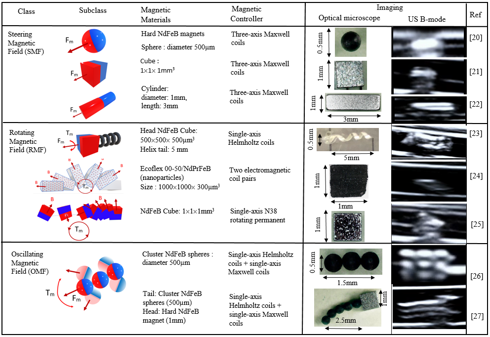

Microscale robots introduce great perspectives into many medical applications such as drug delivery, minimally invasive surgery, and localized biometric diagnostics. Fully automatic microrobots’ real-time detection and tracking using medical imagers are actually investigated for future clinical translation. Ultrasound (US) B-mode imaging has been employed to monitor single agents and collective swarms of microrobots in vitro and ex vivo in controlled experimental conditions. However, low contrast and spatial resolution still limit the effective employment of such a method in a medical microrobotic scenario due to uncertainties associated with the position of microrobots. The positioning error arises due to the inaccuracy of the US-based visual feedback, which is provided by the detection and tracking algorithms. The application of deep learning networks is a promising solution to detect and track real-time microrobots in noisy ultrasonic images. However, what is most striking is the performance gap among state-of-the-art microrobots deep learning detection and tracking research. A key factor of that is the unavailability of large-scale datasets and benchmarks. In this paper, we present the first publicly available B-mode ultrasound dataset for microrobots (USmicroMagSet) with accurate annotations which contains more than 40000 samples of magnetic microrobots. In addition, for analyzing the performance of microrobots included in the proposed benchmark dataset, 4 deep learning detectors and 4 deep learning trackers are used.
1 Introduction
Recently untethered mobile magnetic microrobots have been proposed for a wide range of biomedical applications (drug delivery, clot removal, tissue regeneration) [1] due to their small size and ability to operate in confined spaces and hard-to-reach environments [2]. In endovascular navigation, real-time localization and tracking of microrobots are essential for achieving targeted navigation through imaging feedback. To do so, various medical imaging technologies are being used for the detection and tracking of microrobots such as ultrasound (US) imaging, magnetic resonance imaging, computer tomography, infrared fluorescence imaging, X-ray, and positron emission tomography [3]. Recently, there has been increasing attention towards the navigation of magnetic microrobots using active mode US imaging endorsed by healthcare applications [4]. It can be explained by the fact that ultrasonic imaging is a noninvasive, versatile, low cost and well-established technique that is regularly used in medical settings. The ultrasound B-mode imaging was successfully used at different scales to detect and to track in real-time different robots in vitro and in vivo. For example at the millimeter-scale, soft grippers [5], helical swimmers [6] or soft-bodied robots [7] have been investigated. Different tracking techniques have been implemented to track the small-scale robots such as modified Markov chain Monte Carlo data association algorithm [8], Kalman filtering [8], and conventional neural networks [9]. At the microscale, various types of microrobots were successfully demonstrated such as paramagnetic particles [10], acoustically actuated microswimmer [11], self-propelled microjets [12] and bio-inspired magnetosperm [13] in living tissue. However, the lack of B-mode resolution owing to poor microrobot echogenicity in image contrast, as well as the low signal-to-noise ratio (SNR), hinders the real-time tracking of microrobots in endovascular applications. To enhance spatial resolution, ultrasound phase analysis was implemented in [14] to derive microrobot features such as size and position over time allowing to perform imaging and tracking of a low contrast microrobot in chicken breast. Finally, Doppler-based ultrasound appears as a promising tool for tracking microrobots in echogenic and dynamic environments as biological tissues. In [15], [16] a strategy to navigate a nanoparticle microswarm in real-time under ultrasound Doppler imaging guidance for active endovascular delivery was implemented in blood vessels. The Doppler signals near the microswarm in flowing blood environments were observed, and the microswarm was efficiently tracked and navigated in real-time using Doppler feedback. However, taking into the wide diversity of robot geometries and sizes, variability of swimming principles, and robot material echogenicity properties, the proposed state-of-the-art real-time detection and tracking methodologies face shadowing, low contrast, strong attenuation across an image, and fuzziness of vessel boundaries. Microrobot detection and tracking in vessels is a challenging task, particularly when using US imaging. These challenges in US images include speckle noise, dynamic backgrounds, blur, and US image artifacts. This drives the employment of deep learning-based methods to enhance microrobot detection and tracking in vessels [17]. However, further research on deep learning detection of microrobots in US images is still not fully explored. Furthermore, convolution neural networks (CNN) models and frameworks may also be retrained using a customized dataset, offering deep learning techniques more flexibility than computer vision methods.
Moreover, deep learning-driven techniques yield promising performance for automatic detection and tracking of navigable magnetic microrobots using ultrasonic imaging [18]. But, there is no well-established benchmarking dataset. Typically, some research teams test and report the performance of their technique on their own private dataset utilizing experimental setups designed expressly for that purpose. Consequently, comparing the performance of multiple approaches or predicting how a given methodology will perform if the experimental setup/conditions change is challenging.
In this work, we propose a public large-scale benchmarking dataset (\(USMicroMagset\)), summarized in Fig. 1. The dataset consists of ultrasound B-mode images of magnetic microrobots with different aspect ratios, sizes (1 mm to 300 µm), shapes, soft/rigid structures, and locomotion principles. This survey provides some insights into the challenges of detectability and trackability of a wide variety of magnetic microrobots navigating in microfluidic channels mimicking a vessel network. In addition, this dataset is used to perform a comprehensive survey of deep learning-based microrobot detection and tracking in ultrasonic B-mode images. Based on these comparative analyses [19], [20], we have extracted the best four detectors and the best four trackers. Then we evaluated these detectors and trackers on our dataset \(USMicroMagset\). Finally, using the best detector and tracker algorithms, we evaluated each microrobot under real-time challenging scenarios simulating in vivo imaging problems such as changing ultrasound parameters, changing speed of microrobot motion, partial and full occlusion, and out-of-plane motion.

The paper is organized as follows: Section 2 describes the datasets and the methods used in the proposed work. Section 3 describes the deep learning detectors and trackers. Section 4 made a comparative assessment of the different detectors and trackers before concluding.
2 Microrobot Benchmarking
2.1 Classes
In the proposed \(USMicroMagset\) dataset, there are three different classes describing three operating principles of hard and soft magnetic microrobots. Our dataset is composed of 40k images subdivided into three classes of magnetic microrobots. Fig. 1 summarizes the locomotion principles for each class of magnetic microrobot used in the datasets. We recorded 5k images for each microrobot prototype (80% for training and 20% for testing). All images have been annotated manually by an experienced expert.
2.2 Microrobot principle
Basically, governing equations of magnetized hard and soft microrobots controlled by magnetic fields are as follows : \[\begin{equation} {\vb{\textbf{F}}_{m}}= \left(\vb{M}\cdot \nabla\right) \vb{B} \label{eq:Fm} \end{equation}\] \[\begin{equation} \vb{\textbf{T}_{m}}= \left(\vb{M}\times\vb{B}\right) \label{eq:Tm} \end{equation}\] where \(\vb{\textbf{T}_{m}}\) is the resultant magnetic torque; \(\vb{\textbf{F}_{m}}\) is the resultant magnetic force; \(\vb{M}\) is the magnetic moment of the object; \(\vb{B}\) is the applied magnetic field. Depending on the actuating magnetic fields, three classes have been identified and tested:
2.2.1 Steering magnetic field (SMF) class
The first class consists of three subclasses of force-driven microrobots (Row;1 in Fig. 1) using various shapes of hard NdFeB magnets (spheres, cubes, and cylinders). The steering motion relies on the use of SMF induced by three-axis Maxwell pair coils.
The resultant steering force \(\vb{\textbf{F}_{m}}\) provides a linear steering motion of the microrobot [21]–[23]

- Micro/nano robots,
- Medical robots and systems,
- deep learning methods.
Citation
@article{botros2023,
author = {Botros, Karim and Alkhatib, Mohammad and Folio, David and
Ferreira, Antoine},
publisher = {IEEE},
title = {USMicroMagSet: {Using} {Deep} {Learning} {Analysis} to
{Benchmark} the {Performance} of {Microrobots} in {Ultrasound}
{Images}},
journal = {IEEE Robotics and Automation Letters},
volume = {8},
number = {6},
pages = {3254 - 3261},
date = {2023-06},
url = {https://ieeexplore.ieee.org/document/10093014},
doi = {10.1109/LRA.2023.3264746},
langid = {en},
abstract = {Microscale robots introduce great perspectives into many
medical applications such as drug delivery, minimally invasive
surgery, and localized biometric diagnostics. Fully automatic
microrobots’ real-time detection and tracking using medical imagers
are actually investigated for future clinical translation.
Ultrasound (US) B-mode imaging has been employed to monitor single
agents and collective swarms of microrobots \_in vitro\_ and \_ex
vivo\_ in controlled experimental conditions. However, low contrast
and spatial resolution still limit the effective employment of such
a method in a medical microrobotic scenario due to uncertainties
associated with the position of microrobots. The positioning error
arises due to the inaccuracy of the US-based visual feedback, which
is provided by the detection and tracking algorithms. The
application of deep learning networks is a promising solution to
detect and track real-time microrobots in noisy ultrasonic images.
However, what is most striking is the performance gap among
state-of-the-art microrobots deep learning detection and tracking
research. A key factor of that is the unavailability of large-scale
datasets and benchmarks. In this paper, we present the first
publicly available B-mode ultrasound dataset for microrobots
(\_USmicroMagSet\_) with accurate annotations which contains more
than 40000 samples of magnetic microrobots. In addition, for
analyzing the performance of microrobots included in the proposed
benchmark dataset, 4 deep learning detectors and 4 deep learning
trackers are used.}
}